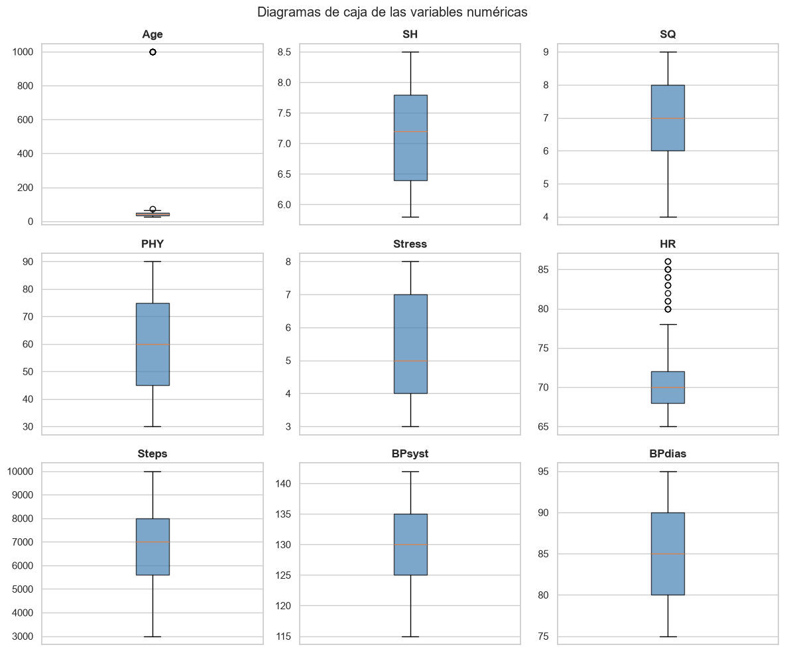
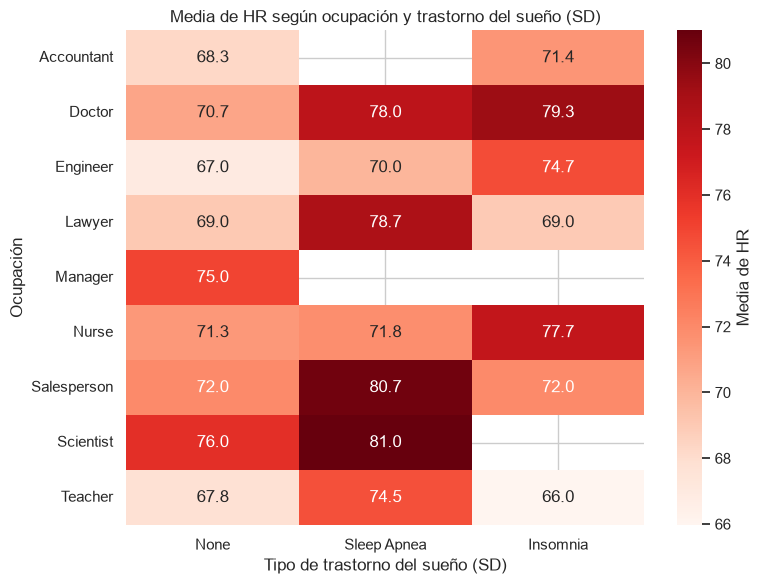

4Práctica: Exploración y preprocesamiento de datos
Autor: Julio Úbeda Quesada · Versión en Python del ejercicio original en R
Este notebook replica, en Python, la actividad de exploración y preprocesamiento sobre un conjunto de datos de salud del sueño y estilo de vida. El dataset contiene variables relacionadas con hábitos de sueño, actividad física, niveles de estrés y otros factores de salud.
El flujo de trabajo cubre: carga y preparación de los datos, normalización de variables categóricas, corrección de inconsistencias en variables cuantitativas, detección y tratamiento de valores erróneos o atípicos, imputación mediante k-vecinos más cercanos (KNN), cálculo e interpretación de correlaciones, y un análisis descriptivo y visual final. El resultado es un archivo de datos procesado, data/sleephealth_processed.csv, que se analiza en la práctica del Módulo 4.
Los datos son sintéticos: se crearon con fines ilustrativos, así que las relaciones que encontremos describen este conjunto de datos y no deben leerse como hallazgos reales sobre la salud.
Para trabajar en tu ordenador, descarga el repositorio completo: el cuaderno necesita la librería src/stats_toolkit y los datos del curso. Las instrucciones de instalación están en el archivo README.md.
La celda siguiente solo actúa en Google Colab: descarga el repositorio del curso, instala las bibliotecas que falten y se sitúa en la carpeta de este cuaderno. Si instala o actualiza alguna, te pedirá que reinicies la sesión y vuelvas a ejecutar el cuaderno. En tu ordenador no hace nada.
Código
# Solo en Google Colab: descarga el repositorio del curso (stats_toolkit y datos),# instala las bibliotecas que falten y se sitúa en la carpeta de este cuaderno.# En otro entorno (tu ordenador, la web del curso) no hace nada.import osimport subprocessimport sysif"google.colab"in sys.modules:from importlib.metadata import PackageNotFoundError, version repo ="/content/Curso-de-Estadistica-Basica"ifnot os.path.isdir(repo): subprocess.run(["git", "clone", "--depth", "1","https://github.com/JulioUQ/Curso-de-Estadistica-Basica.git", repo], check=True)# Bibliotecas de cálculo de requirements.txt (Jupyter ya viene con Colab).withopen(f"{repo}/requirements.txt", encoding="utf-8") as f: requisitos = [linea.split("#")[0].strip() for linea in f] requisitos = [r for r in requisitos if r and r notin ("jupyter", "ipykernel", "nbclient", "nbformat")] nombres = [r.split(">=")[0] for r in requisitos]def versiones(): res = {}for n in nombres:try: res[n] = version(n)except PackageNotFoundError: res[n] =Nonereturn res antes = versiones() subprocess.run([sys.executable, "-m", "pip", "install", "-q", *requisitos], check=True) cambiadas = [n for n, v in versiones().items() if v != antes[n]]if cambiadas:print("Se han instalado o actualizado:", ", ".join(cambiadas))print("Reinicia la sesión (menú «Entorno de ejecución») y vuelve a ejecutar el cuaderno.") os.chdir(f"{repo}/notebooks/01_estadistica_descriptiva")
Código
import syssys.path.append("../../src")import pandas as pdimport numpy as npimport matplotlib.pyplot as pltimport seaborn as snsfrom scipy.stats import pearsonrfrom stats_toolkit import descriptive as descsns.set_theme(style="whitegrid")plt.rcParams["figure.figsize"] = (8, 4.5) # tamaño común de las figuras de una sola gráficapd.set_option("display.max_columns", None)
4.1 Preparación del conjunto de datos
4.1.1 Cargar el archivo de datos
Cargamos el archivo Excel con los datos de salud del sueño y estilo de vida.
Código
df = pd.read_excel("data/sleephealth.xlsx")print(f"El dataset tiene {df.shape[0]} filas y {df.shape[1]} columnas.\n")desc.describe_df(df)
El dataset tiene 374 filas y 13 columnas.
Column
Data Type
Non-null Count
% Null Values
Unique Values
TopCounts
mean
median
std
min
25%
75%
max
0
Person.ID
int64
374
0.00
372
None
187.500000
187.5
108.108717
1.0
94.25
280.75
374.0
1
Gender
str
374
0.00
2
Male (189), Female (185)
NaN
NaN
NaN
NaN
NaN
NaN
NaN
2
Age
float64
371
0.80
34
None
57.840970
43.0
121.153550
27.0
36.00
50.00
999.0
3
Occupation
str
374
0.00
12
Nurse (73), Doctor (71), Engineer (60)
NaN
NaN
NaN
NaN
NaN
NaN
NaN
4
Sleep.Duration
str
374
0.00
29
7.2 (36), 6 (31), 7.8 (27)
NaN
NaN
NaN
NaN
NaN
NaN
NaN
5
Quality.of.Sleep
int64
374
0.00
6
None
7.312834
7.0
1.196956
4.0
6.00
8.00
9.0
6
Physical.Activity.Level
int64
374
0.00
16
None
59.171123
60.0
20.830804
30.0
45.00
75.00
90.0
7
Stress.Level
int64
374
0.00
6
None
5.385027
5.0
1.774526
3.0
4.00
7.00
8.0
8
BMI.Category
str
374
0.00
4
Normal (195), Overweight (148), Normal Weight ...
NaN
NaN
NaN
NaN
NaN
NaN
NaN
9
Blood.Pressure
str
374
0.00
25
130/85 (99), 125/80 (65), 140/95 (65)
NaN
NaN
NaN
NaN
NaN
NaN
NaN
10
Heart.Rate
int64
374
0.00
19
None
70.165775
70.0
4.135676
65.0
68.00
72.00
86.0
11
Daily.Steps
int64
374
0.00
20
None
6816.844920
7000.0
1617.915679
3000.0
5600.00
8000.00
10000.0
12
Sleep.Disorder
str
155
58.56
2
Sleep Apnea (78), Insomnia (77)
NaN
NaN
NaN
NaN
NaN
NaN
NaN
Tras cargar los datos, el DataFrame tiene 374 filas y 13 columnas, coincidiendo con el archivo original.
4.1.2 Identificación de valores duplicados
El conjunto de datos debería tener un registro por Person.ID; cualquier ID repetido indica un error de captura. Filtramos los ID que aparecen más de una vez:
Se encontraron 3 filas duplicadas según: ['Person.ID'].
Person.ID
Gender
Age
Occupation
Sleep.Duration
Quality.of.Sleep
Physical.Activity.Level
Stress.Level
BMI.Category
Blood.Pressure
Heart.Rate
Daily.Steps
Sleep.Disorder
33
35
Male
31.0
Doctor
6.1
6
30
8
Normal
125/80
72
5000
NaN
34
35
Male
31.0
Doctor
7.7
7
75
6
Normal
120/80
70
8000
NaN
35
35
Male
31.0
Doctor
6.1
6
30
8
Normal
125/80
72
5000
NaN
Los tres registros con Person.ID 35 no son iguales entre sí. Dos de ellos (filas 33 y 35) coinciden en todas las columnas: son un mismo registro capturado dos veces, así que conservamos solo uno. El tercero (fila 34) tiene el mismo identificador pero mediciones distintas (sueño, actividad, estrés…): probablemente es otra observación a la que se asignó el mismo Person.ID por error, así que la conservamos.
Después creamos una columna ID nueva, secuencial y única, y la usamos como identificador definitivo a partir de ahora.
Código
n_antes =len(df)df = df.drop_duplicates().reset_index(drop=True)print("Filas eliminadas por ser duplicados exactos:", n_antes -len(df))df["ID"] = df.index +1# Comprobamos que ahora es único por registroassert df["ID"].is_uniqueprint("El nuevo identificador 'ID' es único para las", len(df), "filas.")
Filas eliminadas por ser duplicados exactos: 1
El nuevo identificador 'ID' es único para las 373 filas.
4.1.3 Identificación de valores vacíos y/o nulos
Revisamos si hay valores nulos (NaN), espacios en blanco o cadenas vacías en cualquier columna.
Código
resumen_cols = desc.describe_df(df)columnas_con_vacios = resumen_cols.loc[resumen_cols["% Null Values"] >0, "Column"].tolist()print("Columnas con valores vacíos o nulos:", columnas_con_vacios)df[columnas_con_vacios].isna().sum()
Columnas con valores vacíos o nulos: ['Age', 'Sleep.Disorder']
Age 3
Sleep.Disorder 218
dtype: int64
Age tiene valores nulos genuinos, y Sleep.Disorder tiene muchos NaN — pero en este caso no son datos perdidos: representan ausencia de trastorno del sueño. Más adelante lo recodificamos explícitamente como la categoría "None".
4.1.4 Simplificación del nombre de las columnas
Renombramos las columnas para simplificar el código:
Comprobamos si hay espacios en blanco al inicio o al final de los valores categóricos, un error de captura habitual.
Código
cols_con_espacios = [ c for c in cat_colsif df[c].dropna().astype(str).str.contains(r"^\s|\s$").any()]print("Columnas con espacios al inicio/final:", cols_con_espacios if cols_con_espacios else"ninguna")
Columnas con espacios al inicio/final: ninguna
No hay espacios en blanco al inicio o al final en ninguna columna categórica.
4.2.2 Corrección de tipos de dato
SH (duración del sueño) se cargó como texto porque mezcla el punto y la coma como separador decimal (un problema típico al combinar fuentes con distinta configuración regional). Unificamos al punto decimal y convertimos a float.
Código
print("Tipo de 'SH' antes:", df["SH"].dtype)df["SH"] = df["SH"].astype(str).str.replace(",", ".", regex=False).astype(float)print("Tipo de 'SH' después:", df["SH"].dtype)df["SH"].describe()
Tipo de 'SH' antes: str
Tipo de 'SH' después: float64
count 373.000000
mean 7.135147
std 0.795139
min 5.800000
25% 6.400000
50% 7.200000
75% 7.800000
max 8.500000
Name: SH, dtype: float64
4.2.3 Estandarización de las categorías
Occupation: unificamos variantes que designan la misma ocupación — "engineer" (minúscula) y "Software Engineer" pasan a "Engineer"; "Sales Representative" pasa a "Salesperson".
Código
print("Antes de normalizar:")desc.unique_categories(df, columns=["Occupation"])df["Occupation"] = df["Occupation"].str.title()df["Occupation"] = df["Occupation"].replace({"Software Engineer": "Engineer","Sales Representative": "Salesperson",})print("Después de normalizar:")desc.unique_categories(df, columns=["Occupation"]);
Antes de normalizar:
'Occupation': ['Accountant', 'Doctor', 'Engineer', 'Lawyer', 'Manager', 'Nurse', 'Sales Representative', 'Salesperson', 'Scientist', 'Software Engineer', 'Teacher', 'engineer']
Después de normalizar:
'Occupation': ['Accountant', 'Doctor', 'Engineer', 'Lawyer', 'Manager', 'Nurse', 'Salesperson', 'Scientist', 'Teacher']
BMI: unificamos "Normal Weight" en "Normal", ya que designan la misma categoría.
Código
print("Antes de normalizar:")desc.unique_categories(df, columns=["BMI"])df["BMI"] = df["BMI"].replace({"Normal Weight": "Normal"})print("Después de normalizar:")desc.unique_categories(df, columns=["BMI"]);
Antes de normalizar:
'BMI': ['Normal', 'Normal Weight', 'Obese', 'Overweight']
Después de normalizar:
'BMI': ['Normal', 'Obese', 'Overweight']
BP (presión arterial) mantiene el formato correcto (XXX/XX) en todos los registros. En SD (trastorno del sueño), NaN quiere decir “sin trastorno”, así que lo recodificamos de forma explícita como la categoría "None" en lugar de dejarlo como valor perdido:
Confirmamos que no quedan cadenas vacías ("") sin convertir a NaN en ninguna columna.
Código
for c in df.columns:if df[c].dtype ==objector pd.api.types.is_string_dtype(df[c]): df[c] = df[c].replace("", np.nan)print("Columnas con NaN tras la revisión:")print(df.isna().sum()[df.isna().sum() >0])
Columnas con NaN tras la revisión:
Age 3
dtype: int64
4.3.3 Descomposición de BP en BPsyst y BPdias
BP combina dos medidas (presión sistólica y diastólica) en un único campo de texto con formato "sistólica/diastólica". Lo separamos en dos variables numéricas independientes.
El Person.ID duplicado ya se trató en el apartado «Identificación de valores duplicados»: eliminamos el registro repetido y creamos un identificador ID nuevo y único.
4.4.2 Valores atípicos
Usamos diagramas de caja para inspeccionar visualmente las variables numéricas y detectar outliers.
Código
plot_cols = [c for c in num_cols if c !="ID"] + ["BPsyst", "BPdias"]fig, axes = plt.subplots(3, 3, figsize=(12, 10))for ax, col inzip(axes.flat, plot_cols): ax.boxplot(df[col].dropna(), patch_artist=True, boxprops={"facecolor": "steelblue", "alpha": 0.7}) ax.set_title(col, fontweight="bold") ax.set_xticks([])fig.suptitle("Diagramas de caja de las variables numéricas")for ax in axes.flat[len(plot_cols):]: ax.axis("off")plt.tight_layout()plt.show()

Se observa un valor atípico extremo en Age, muy por encima del resto de edades — un claro candidato a valor centinela (un código usado para representar “desconocido”, en vez de un dato real). HR muestra algunos valores altos, pero una frecuencia cardíaca en reposo algo por encima de 85 está dentro de la variabilidad fisiológica normal, así que no la tratamos como error. El resto de variables numéricas no muestra outliers destacables.
4.4.3 Manejo de valores atípicos
Para Age, identificamos los valores atípicos aplicando la regla del rango intercuartílico (1.5 × RIC):
La regla marca siete valores. Seis corresponden al valor centinela 999 (“edad desconocida”): no son edades reales, así que los sustituimos por NaN, el estándar para datos faltantes, para que se traten correctamente en los análisis y se puedan imputar en el siguiente apartado.
El séptimo, 73 años, también queda fuera del intervalo de la regla, pero es una edad perfectamente posible. Un valor atípico no es necesariamente un error: sin otra información que indique lo contrario, lo conservamos.
Código
df["Age"] = df["Age"].replace(999, np.nan)print("Valores == 999 restantes:", (df["Age"] ==999).sum())print("Valores NaN en 'Age':", df["Age"].isna().sum())
Valores == 999 restantes: 0
Valores NaN en 'Age': 9
4.5 Imputación
Imputamos los NaN de las variables numéricas (excluyendo ID) mediante el método de los k vecinos más cercanos (k = 3): cada valor ausente se sustituye por el promedio de ese valor en los k registros más parecidos.
“Más parecidos” se mide con una distancia entre registros, y la distancia depende de las unidades: Steps se mide en miles y SH en horas, así que, sin más, una diferencia de 1000 pasos pesaría lo mismo que mil horas de sueño y los pasos decidirían por sí solos quiénes son los vecinos. Por eso estandarizamos antes cada variable (le restamos su media y la dividimos por su desviación típica), buscamos los vecinos en esa escala común y devolvemos después los valores imputados a sus unidades originales.
Empates. Varios registros de este conjunto son idénticos en todas las variables salvo la edad, así que un registro puede tener más de k vecinos a la misma distancia. KNNImputer de scikit-learn elige entonces entre ellos según un orden interno que puede cambiar de un ordenador a otro, y el valor imputado no sería reproducible. Usamos desc.knn_impute, que aplica el mismo KNNImputer con una regla de desempate fija: entre vecinos a la misma distancia se eligen los de menor ID.
Código
impute_cols = [c for c in num_cols if c !="ID"] + ["BPsyst", "BPdias"]datos = df[impute_cols]# Estandarización (los NaN se mantienen como NaN)medias, desv = datos.mean(), datos.std()datos_z = (datos - medias) / desv# KNN (k = 3) con desempate determinista: entre vecinos a la misma distancia# se eligen los de menor ID (ver la explicación anterior)imputados_z = desc.knn_impute(datos_z, n_neighbors=3, ids=df["ID"])# Volvemos a las unidades originales y solo rellenamos los huecosimputados = imputados_z * desv + mediasdf_imputed = df.copy()df_imputed[impute_cols] = datos.where(datos.notna(), imputados)filas_imputadas = datos.isna().any(axis=1)df_imputed.loc[filas_imputadas, ["ID"] + impute_cols]
ID
Age
SH
SQ
PHY
Stress
HR
Steps
BPsyst
BPdias
40
41
30.000000
7.7
7
75
6
70
8000
120.0
80.0
50
51
34.666667
7.5
8
45
3
70
8000
120.0
80.0
74
75
32.000000
6.0
6
30
8
72
5000
125.0
80.0
85
86
35.000000
7.2
8
60
4
65
5000
125.0
80.0
152
153
39.000000
7.2
8
60
5
68
8000
130.0
85.0
178
179
43.000000
7.8
8
90
5
70
8000
130.0
85.0
243
244
44.000000
6.3
6
45
7
72
6000
130.0
85.0
303
304
49.000000
6.1
6
90
8
75
10000
140.0
95.0
332
333
54.000000
8.4
9
30
3
65
5000
125.0
80.0
La tabla anterior muestra los registros donde Age ha sido imputado (9 en total: 3 valores nulos originales más 6 que eran el centinela 999), usando el método KNN con \(k=3\) sobre las variables estandarizadas.
4.6 Correlaciones
4.6.1 Matriz de correlaciones
Calculamos la correlación de Pearson entre todas las variables numéricas y la visualizamos como un mapa de calor.
Interpretación de las correlaciones más relevantes. Recuerda que los datos son sintéticos y que una correlación describe una asociación en este conjunto, no una relación causal.
Positivas:
BPsyst y BPdias (≈0.97): presión sistólica y diastólica están fuertemente ligadas, como cabría esperar de dos medidas de la misma presión arterial.
PHY y Steps (≈0.77): más actividad física declarada va acompañada de más pasos diarios.
Stress y HR (≈0.67): a mayor estrés, mayor frecuencia cardíaca.
Age con BPsyst/BPdias (≈0.56–0.57): en este conjunto, la presión arterial tiende a ser más alta en las personas de más edad.
Negativas:
Stress y SQ (≈-0.90) / Stress y SH (≈-0.81): más estrés se asocia con peor calidad y menor duración del sueño; es una de las relaciones más fuertes del conjunto (solo la supera la de BPsyst y BPdias).
HR y SQ (≈-0.66): una frecuencia cardíaca en reposo más alta se asocia con peor calidad de sueño percibida.
4.6.2 Cálculo manual de la correlación de Pearson
Implementamos la fórmula de Pearson sin usar funciones ya existentes para el cálculo, y validamos el resultado comparándolo con scipy.stats.pearsonr y con DataFrame.corr().
Código
def pearson_manual(x: np.ndarray, y: np.ndarray) ->float: x, y = np.asarray(x, dtype=float), np.asarray(y, dtype=float)if x.shape != y.shape:raiseValueError("x e y deben tener la misma longitud") mask =~(np.isnan(x) | np.isnan(y)) x, y = x[mask], y[mask] mean_x, mean_y = x.mean(), y.mean() num = np.sum((x - mean_x) * (y - mean_y)) den = np.sqrt(np.sum((x - mean_x) **2) * np.sum((y - mean_y) **2))return num / denx = df_imputed["BPsyst"].valuesy = df_imputed["BPdias"].valuesr_manual = pearson_manual(x, y)r_scipy, _ = pearsonr(x, y)r_pandas = df_imputed["BPsyst"].corr(df_imputed["BPdias"])print(f"Correlación manual: {r_manual:.6f}")print(f"Correlación (scipy): {r_scipy:.6f}")print(f"Correlación (pandas): {r_pandas:.6f}")
SD y Occupation son variables nominales: sus categorías no tienen orden, así que unirlas con líneas sugeriría una tendencia que no existe. Representamos la media de HR en cada combinación con un mapa de calor; las celdas vacías corresponden a combinaciones sin ninguna persona, y el número de personas por celda es muy variable.
Código
hr_medias = df_imputed.pivot_table(index="Occupation", columns="SD", values="HR", aggfunc="mean")hr_medias = hr_medias[["None", "Sleep Apnea", "Insomnia"]]fig, ax = plt.subplots(figsize=(8, 6))sns.heatmap(hr_medias, annot=True, fmt=".1f", cmap="Reds", ax=ax, cbar_kws={"label": "Media de HR"})ax.set_title("Media de HR según ocupación y trastorno del sueño (SD)")ax.set_xlabel("Tipo de trastorno del sueño (SD)")ax.set_ylabel("Ocupación")plt.tight_layout()plt.show()

4.8 Archivo final
Guardamos el resultado del preprocesamiento en data/sleephealth_processed.csv. Es el archivo que se analiza en la práctica del Módulo 4.
Compara la media, la mediana y la desviación típica de Age antes de imputar (con los valores ausentes excluidos, después de convertir el centinela 999 en NaN) y después de la imputación KNN. ¿Qué cambia y por qué?
Aplica la regla de Tukey (\(1{,}5 \cdot \text{RIC}\)) a la frecuencia cardíaca (HR) del conjunto final. ¿Cuántos valores señala como atípicos? ¿Los eliminarías?
Código
# Escribe tu solución aquí
4.10 Soluciones
Intenta resolver los ejercicios antes de desplegar cada solución.
TipSolución del ejercicio 1
df conserva los NaN de Age (el centinela ya convertido) y df_imputed contiene los valores imputados.
La imputación añade 9 valores (de 364 a 373). La media apenas cambia (de 42,40 a 42,34), la mediana se mantiene y la desviación típica baja ligeramente (de 8,90 a 8,88). KNN estima cada valor a partir de las personas más parecidas en las demás variables, así que no coloca todos los imputados en el mismo punto y reduce la dispersión mucho menos que imputar la media. Aun así, los valores imputados son estimaciones: el análisis posterior los trata como si se hubieran observado, lo que tiende a subestimar la incertidumbre.
TipSolución del ejercicio 2
Usamos desc.detect_outliers, que aplica la regla de Tukey con los cuartiles por interpolación lineal.
La regla señala 15 valores, entre 80 y 86 latidos por minuto. El RIC es muy pequeño (4 lpm), porque la mitad central de las personas está entre 68 y 72 lpm, así que el límite superior (78) queda muy cerca del centro. Sin embargo, una frecuencia cardíaca en reposo de 80 a 86 lpm es habitual en adultos: son valores plausibles y no hay motivo para eliminarlos. La regla de Tukey señala valores que conviene revisar, no errores.